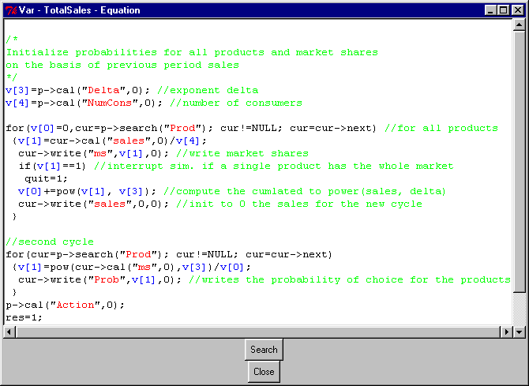

HyperManual Lsd
Windows Lsd FAQ's
Equation Code
These windows are created during a Lsd simulation session to show the
C++ code used to compute the Variables of the model. This code is copied
from the equation file for presentation purposes but does not affect the
actual simulation behaviour. To change the model's equation it is necessary
to recompile the model (see the LMM Manual).
For help on the Lsd equation language see the Lsd
function manual.
A window reporting the equation for a Variable is can be created double-clicking
on the Variable's label (in the main Browser
when the simulation is not running, from the Debugger
window during a simulation run, or from the Analysis of Result window clicking
with the right button of the mouse) and using the button Equation.
In case the equation file is mis-specified, users must choose the equation
file name (normally named fun_XYZ.cpp
for the XYZ model).

The window reports the C++ code using different colors:
-
green for comments, that is, pieces of text
that are not considered code to be executed;
-
blue for the local variables v[0],
v[1] etc., used in the equations to store temporary values;
-
red for models' labels. In case the label
is a variable it can be double-clicked to show their equations;
A button Search permit to search strings in the window.
In order to have the equation code showed, the equation
file name must be properly set.
To close the window, click on the button Close.
Lsd Equations' Language Hints
The code for the equations in Lsd is written in C++, though, in most cases,
the actual code is very simple to write, implying few elementary operations.
Moreover, Lsd offers model writers a set of functions that facilitate the
task of writing equations (see the Lsd function
section). Yet, model writers can include in the equation code any legal
C++ statement.
Usual Simulation Equations' Problems
Writing programs for simulation models, there are two types of problems
arising when writing the equations:
1) Multiple instances of elements with the same name;
2) Execution precedence.
The first problem arises because we want to use the same functional
structure for different instances of the same type of Variable, but different
numerical values (depending on the exact instance).
The second problem stems from the fact that computers are inherently
sequential machines, while we usually think a model in separate chunks.
If a Variable Y uses another Variable X in its equation, it is pretty different
if X has already been updated when used by Y or has still the previous
period's value.
Normal programming languages offers a variety of solutions to these
problems, but the results are often error prone and very rigid. That is,
the whole program cannot be even slightly changed without affecting the
overall consistency of the computational flow.
Lsd requests model writers to make only minimal efforts in order to
solve the above problems, offering a very simple and straightforward system
to express equations. In fact, in Lsd an equation is represented as an
abstract algorithm, and only at the very time of updating of a Variable
its numerical content is filled with the current values stored in the model.
Lsd Equations
Each equation is a piece of code attached to every Variable with a given
Label that is computed during a generic time t of a simulation run, providing
the value of time t for its corresponding Variable. Though the algorithm
is the same, in general the numerical values to be used in the equations
for the different instances must be different. For example, the productivity
if each firm in a model will be computed in the same way for all firms,
but has to use the differentiated cost values of each firm. Technically,
it means that any numerical value of the model used in the code of one
equation must be requested to one Object of the model. Any equation has
available two Objects by default, and others can be obtained using special
Lsd functions.
The two Object always available are the following:
Variable's Object: p->
The Object most used to fetch values in an equation is the Object containing
the Variable to which the equation refers to. Using this Object, if there
are many instances of its type, each equation for its Variables will use
the values contained in the same Object.
In the code the Object is referred to using "p->"
(for "parent of the Variable") followed by the type of function that
is necessary to use. Typically, model writers will use the function cal("Label",
lag) providing the value of Variable (or Parameter) with name Label
and with lag lag (where the lag is always 0 for
Parameters). See more on available Lsd functions.
Caller's Object: c->
Another frequently used Object is called c->,
for caller. If a Variable requests the value of another Variable, the latter's
equation can necessitate to use the Object containing the "caller" Variable,
and for this its equation can use c->.
Note that if a Variable is not requested by another Variable (but it is
simply computed because of its normal updating), the value of c-> is NULL.
Other Objects: cur->, cur1-> etc.
Sometime it is necessary to use other Objects, for example for implementing
a cycle through a series of different Objects. Modellers can assign C++
pointers to Objects to different Objects of the model and using them to
activate the Lsd functions.
During the computation of an equation are usually used temporary C++
variables to store partial computations. These variables are called v[0],
v[1] etc. and have a meaning only within one single equation.
The final part of any equation there is always a line like res=...;
that is, the assignation of a value to the C++ variable res,
that will be used as the value of the Variable for that time step.
The most frequently used Lsd equations are:
object->cal("Lab", n);
Means that the equation asks to the Object object
to provide the value of Lab with the n
time lags. Lab must a Variable or a Parameter.
The Object object can contain or not the
requested Lab. A automatic search procedure
will explore the whole model, if necessary, searching for a Variable or
Parameter with the label Lab. If more there
exists more than one instance of Lab, the
search procedure will return the value of the "closest" to the Object object.
The value of n is the number of lags. That
is, if n equals 1 means that the value
requested must be the one of the previous time step of the simulation.
If n equals 0, it means that value requested
must be the one of the same time step for which the equation is computing
the value of its Variable. For Parameters, the value of n
is always 0.
An example of the use of this Lsd function is:
v[0]=p->cal("Profit",1);
that means that the equation assigns to the temporary variable v[0]
a value of the model. The value is requested to the Object containing the
Variable under computation. It has to provide the value of Variable Profit
at the previous time step.
Another example is:
v[1]=c->cal("K",0);
That is, the line assigns to v[1] the value of Variable or Parameter
K.
But the instance of K must be searched starting from the Object that originated
the computation of the equation itself and not from the Object containing
the Variable of the equation.
Normally, the use of c- in an equation
indicates that Variable to which the equation refers is a sort of "service"
Variable. That is, its value is not useful in itself but it is used by
other Variables in the model that request it to make some computations.
Therefore the Variable must not be computed, as the default system in Lsd,
only once at each time step, but as many times as it is requested. This
is obtained by adding in the equations the line
last_update--;
that forces the Variable to be computed any time it is requested.